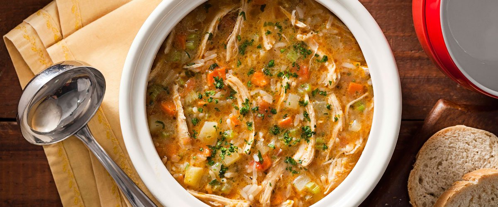
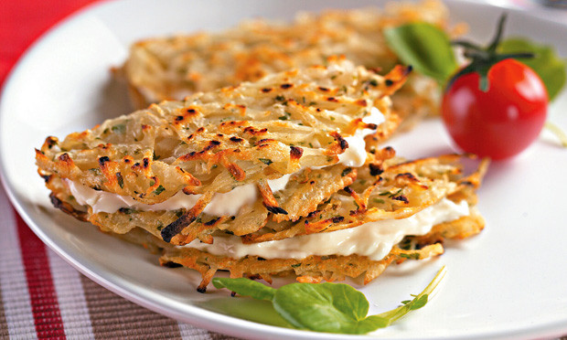
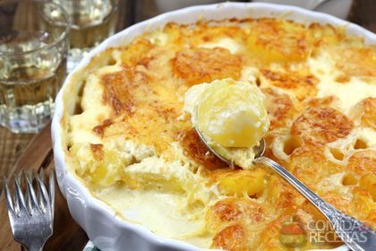
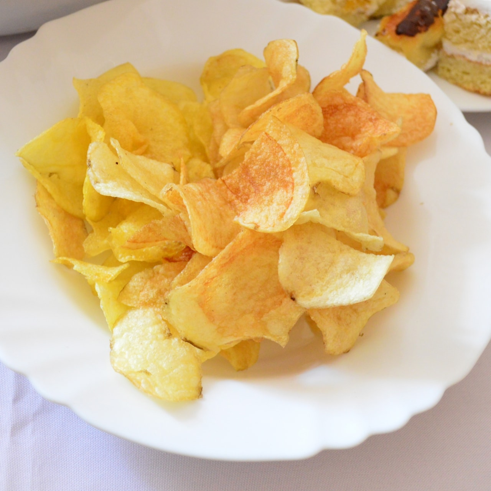

menu
Sopa Irlandesa

Ingredientes
- 300g de filé mignon cortado em cubos pequenos
- 2 cebolas grandes
- 1 cenoura grande
- 2 batatas grandes
- 850ml de água
- Temperos: alho, sal, pimenta do reino, páprica picante e
tempero seco de cebola, sala e bacon, além de cebolinha
para dar o toque final
Modo de Preparo
- Misture os cubos de carne com todos os temperos, menos com a cebolinha, e deixe pegando gosto
- Corte as cebolas, batatas e cenouras em cubos
- Aqueça uma panela alta com um fio de azeite e refogue rapidamente a carne com a cebola, colocando em seguida a cenoura e a batata;
- Complete com a água e misture levemente, para provar se está boa de sal e tempero e fazer os ajustes necessários
- Tampe a panela e deixe no fogo baixo por 40 minutos, para o caldo pegar bem o gosto e engrossar
- Na hora de servir, misture a cebolinha cortada para que ela fique fresca.
Canja de Galinha

Ingredientes
- 2 peitos de frango sem ossos.Cortados em cubos pequenos
- 2 batatas grandes picadas em cubos
- 1 cenoura grande picada em cubos
- 1 litro de água
- 1 potinho de arroz
- Temperos a gosto
Modo de Preparo
- Numa panela alta, refogue o alho com azeite de oliva e junte o frango, colocando sal e pimenta do reino
- Quando já estiver bem refogado e soltando do fundo, adicione 1 litro de água junto com as batatas e cenouras picadas;
- Coloque o resto dos temperos, misture e experimente o caldo para ajustar o sabor;
- Deixe a panela semi-tampada e ferva no fogo alto por 30 minutos
- Quando os ingredientes estiverem na consistência de sua preferência, adicione o arroz e misture
- Se você achar que a canja ficou com pouco líquido, após adicionar o arroz, coloque mais 1 copo de água filtrada
- Deixe no fogo até o arroz também ficar quente
- Adicione salsinha picada e sua canja de galinha está pronta para ser servida!
Tortilha

Ingredientes
- 4 ovos
- 3 batatas médias/grandes cortadas em cubos
- Azeite de Oliva
- Tempero à gosto
Modo de Preparo
- Após picar as batatas em cubinhos, forre o fundo da frigideira com azeite de oliva, não precisa ser uma piscina de azeite, somente o suficiente para cobrir todo o fundo
- Leve ao fogo e, quando estiver quente, despeje as batatas picadas, arrumando-as para preencherem todos os espaços
- De tempos em tempos, mexa bem (porém delicadamente) as batatas, pois irão começar a grudar
- Quando elas estiverem começando a ficar queimadinhas, é a hora de diminuir o fogo e colocar os ovos
Batatas Rústicas

Ingredientes
- 3 batatas asterix grandes com casca
- 2 litros de óleo de canola
- 1 punhado de sal
Modo de Preparo
- Corte as batatas ao meio no sentido mais comprido, depois ao meio de novo e mais uma vez, de modo que fiquem parecendo canoas
- Esquente água numa panela grande com o punhado de sal e, quando ferver, coloque as batatas cortadas por 5 minutos
- Escorra-as numa peneira e molhe um pouco com água corrente
- Forre o fundo de uma vasilha grande com cubos de gelo, deposite as batatas e cubra com água por 20 minutos
- Escorra novamente as batatas e, com a ajuda de um pano de cozinha limpo, enxugue-as bem
- Com o óleo já quente, frite as batatas por imersão até que estejam douradas
Batata cremosa ao forno

Ingredientes
- 4 batatas médias
- 1 copo de requeijão
- 1 copo de creme de leite
- Temperos (sal, pimenta do reino e um mix de ervas finas secas)
Modo de Preparo
- Pré-aqueça o forno em 200 graus
- Esquente água suficiente para cobrir as batatas, que deverão estar cortadas em palito
- Somente quando a água ferver, despeje as batatas na panela e conte 5 minutos
- Retire e escorra em água fria para parar o cozimento
- Junte o requeijão, o creme de leite e os temperos, misturando tudo muito bem para ficar homogêneo
- Coloque as batatas em uma forma e misture com o molho que você acabou de fazer
- Leve ao forno por aproximadamente 30 minutos a 200 graus, misturando um pouco o molho por volta dos 15-20 minutos
- Espete com um garfo ou experimente uma batata para ver se a textura lhe agrada.Pronto!
Chips de mandioquinha frita

Ingredientes
- 2 mandioquinhas grandes
- Óleo para fritar
- Sal e lemon pepper a gosto
Modo de Preparo
- Coloque 1L de água para ferver
- Corte fatias de mandioquinha bem finas com uma faca afiada ou um mandolim
- Quando a água estiver fervendo, coloque as fatias por exatamente 1 minuto, escorrendo em seguida com água corrente para parar o cozimento
- Seque bem as rodelas com um pano de cozinha limpo
- Com o óleo quente, frite as fatias de mandioquinha até ficarem douradas
- Escorra numa grade ou peneira para retirar o excesso de óleo
- Tempere com sal e lemon pepper, ou com o tempero de sua preferência